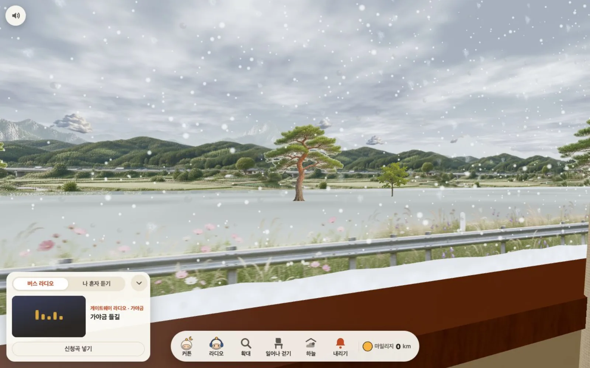
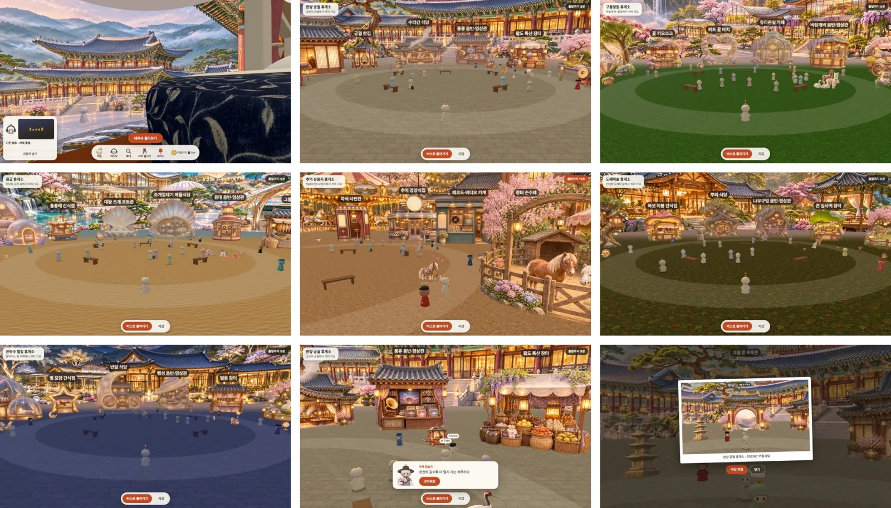
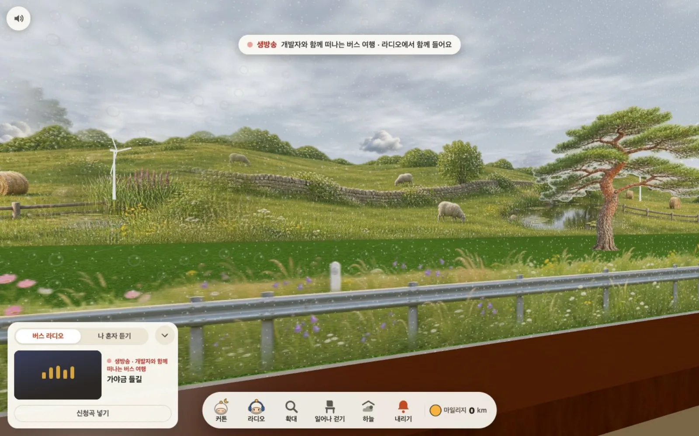

어떻게 만들었나
표 한 장으로 시작하는 휴식
게이트웨이는 3D로 그린 터미널 대합실에서 시작합니다. 화면을 누르면 걷고, 의자를 누르면 앉고, 매표소에서 하루 한 장 무료 표를 받습니다. 전광판에서 1호차부터 10호차를 고르고 좌석표에서 빈자리를 골라 게이트로 걸어 나가면 탑승입니다.
대합실에는 단골 손님들이 하루 일과대로 움직이고, 매점과 기념품 가게, 창가 커피숍에서 시간을 보낼 수도 있습니다. 사람이 많아지면 대합실 2, 3이 저절로 열립니다.
모두가 같은 창밖을 봅니다
버스는 1호차부터 10호차까지 4분 간격으로 늘 달립니다. 버스 한 대를 서버의 방 하나로 나누고 출발 시각으로 위치를 계산해, 같은 버스에 탄 사람은 같은 순간에 같은 풍경을 봅니다. 100km 노선에는 도심과 들판, 대관령, 동해, 다도해 같은 장소 20곳이 이어집니다.
낮과 밤은 한국 시각을 따르고, 비 다섯 가지와 눈 세 가지가 창에 부딪혀 맺히고 녹습니다. 유리 천장을 열면 밤하늘의 별이 보입니다.

30분마다 서는 테마 휴게소
버스는 30분을 달리고 10분 동안 휴게소에 섭니다. 판타지 휴게소 여섯 곳이 있고, 버스마다 다른 곳에 섭니다. 내려서 광장을 둘러보고, 직원과 손님이 저마다 움직이는 건물 사이를 걷고, 기념사진을 찍습니다.
휴게소마다 소리와 상품이 다르고, 스탬프를 모으면 마일리지가 쌓입니다. 내리면 탄 거리만큼 마일리지 정산 카드를 받습니다.

함께 듣는 버스 라디오
같은 버스는 같은 곡을 같은 순간에 듣습니다. 게이트웨이 라디오가 기본으로 흐르고, 좋아하는 유튜브 노래를 신청하거나 나 혼자 듣기 목록에 담을 수 있습니다. 운영자는 관리자 화면에서 라디오 곡을 넣고 고치고 숨깁니다.
데이터는 Supabase에, 실시간 동승은 Cloudflare Workers와 Durable Objects 위에서 돌아가며, 동시 5,000명 시험에서 오류가 없었습니다. 생방송 DJ 라디오는 만들어 두었지만 지금은 보류 중입니다.
